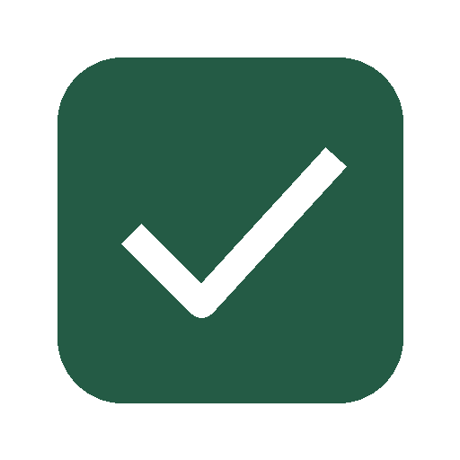

status-badge.psd：可分別切換的三個圖層
這是課程製作的512×512 RGB點陣素材。Background圖層是白底，預設隱藏；Card圖層是綠色圓角底；Check圖層是白色勾號。此素材不是Figma畫面，也不是可編輯文字圖層。


在Photoshop開啟PSD時，應能分別切換Background與Check圖層的眼睛圖示；隱藏Background後，於Export As選擇PNG與Transparency，輸出512×512檔案。四角需維持透明，不能用白底JPG代替。